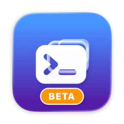
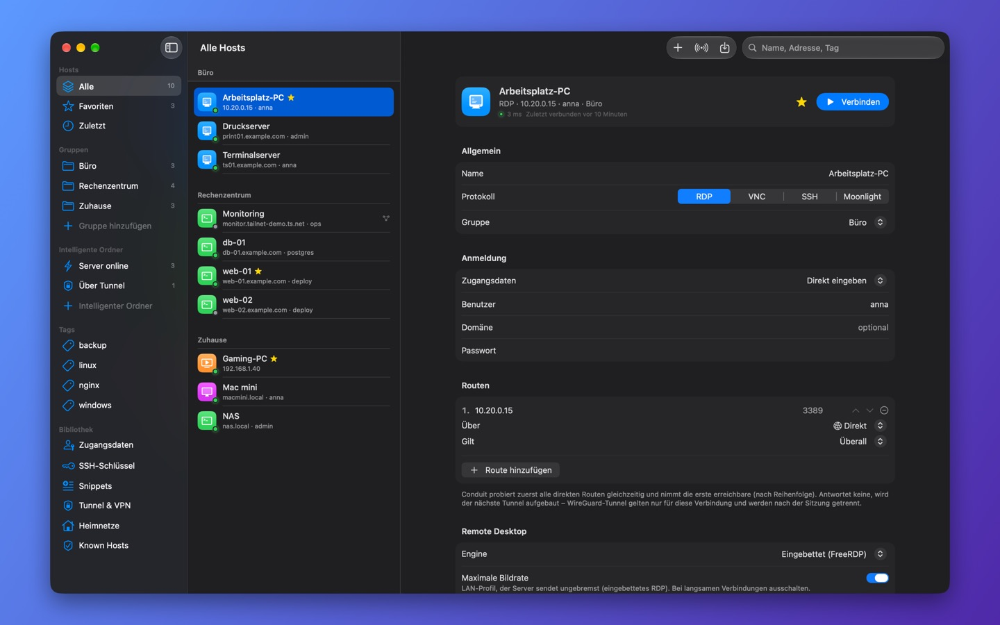
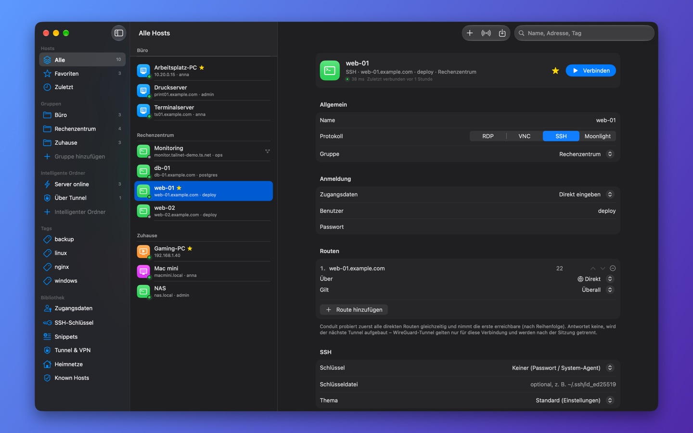
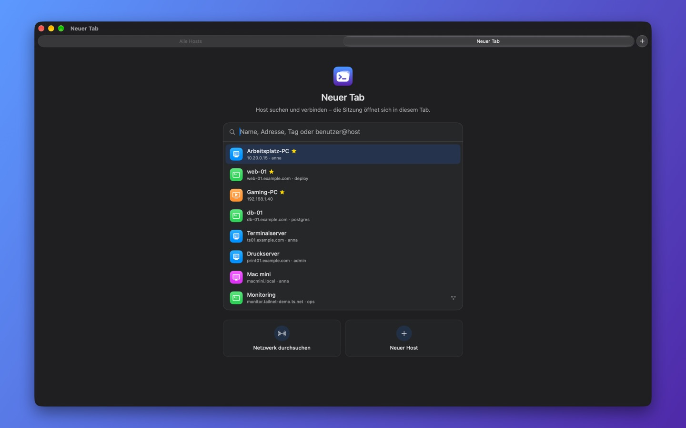

Conduit
Alle deine Rechner in einer nativen Mac-App – RDP, SSH, VNC und Moonlight, als Tabs, synchron über iCloud.
Kostenlos testen (TestFlight) Discord-Community
Öffentliche Beta · benötigt macOS 26 · kostenlos während der Testphase

So machst du mit
- Auf dem Mac TestFlight aus dem App Store laden.
- Den Einladungslink auf dem Mac öffnen und „Annehmen“ klicken.
- In TestFlight bei Conduit auf „Installieren“ klicken – fertig. Updates kommen automatisch.
Wichtig: Conduit gibt es nur für den Mac. Wenn du den Link auf dem iPhone öffnest, bist du zwar eingetragen, kannst aber nichts installieren – dann einfach TestFlight auf dem Mac öffnen.
Was Conduit kann
Alles in Tabs
RDP, VNC und Terminal öffnen als Tabs. Einen Tab herausziehen macht ihn zum eigenen Fenster – die Verbindung bleibt bestehen.
RDP, SSH, VNC, Moonlight
Ein Ort für Windows-PCs, Server, Raspberry Pis, NAS und Spiele-PCs. Mehrere Monitore, Vollbild, SFTP, Port-Weiterleitungen.
Tailscale & WireGuard
Erkennt Tailscale-Geräte, wählt die passende Route und baut Tunnel bei Bedarf selbst auf.
Wake-on-LAN
Rechner wecken, ausschalten oder neu starten – auch von unterwegs über ein Gerät im Heimnetz.
Umstieg in Sekunden
Hosts aus Remote Desktop Manager mit ⌘C/⌘V übernehmen, .rdp-Dateien und ~/.ssh/config importieren.
Privat by Design
Passwörter im Schlüsselbund, Sync über deine iCloud. Keine Werbung, kein Tracking, kein Konto.


Feedback
Bugs und Ideen am liebsten im Discord (Foren #bugs und #feature-wünsche) oder direkt in TestFlight über „Beta-Feedback senden“. Jeder neue Build wird dort angekündigt.
Conduit
All your machines in one native Mac app – RDP, SSH, VNC and Moonlight, in tabs, synced with iCloud.
Try it free (TestFlight) Discord community
Public beta · requires macOS 26 · free during the beta · English and German
How to join
- On your Mac, get TestFlight from the App Store.
- Open the invite link on your Mac and click “Accept”.
- Click “Install” next to Conduit in TestFlight. Updates arrive automatically.
Conduit is Mac-only. If you opened the link on your iPhone you're signed up but can't install there – just open TestFlight on your Mac.
Highlights
Everything in tabs
RDP, VNC and terminal sessions open as tabs. Drag one out to get its own window – the connection stays up.
RDP, SSH, VNC, Moonlight
One place for Windows PCs, servers, Raspberry Pis, NAS boxes and gaming PCs. Multi-monitor, full screen, SFTP, port forwarding.
Tailscale & WireGuard
Finds Tailscale devices, picks the right route and brings tunnels up on demand.
Wake-on-LAN
Wake, shut down or restart machines – even from the road, relayed through a device at home.
Switch in seconds
Copy hosts out of Remote Desktop Manager with ⌘C/⌘V, import .rdp files and ~/.ssh/config.
Private by design
Passwords in your Keychain, sync through your iCloud. No ads, no tracking, no account.
Found a bug or have an idea? Join the Discord or use “Send Beta Feedback” in TestFlight.